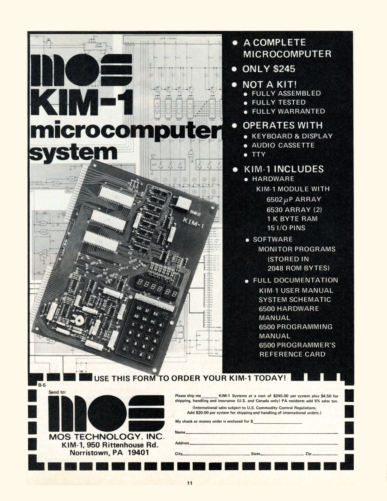

KIM-1
The $245 hex-keypad computer that made programming feel like typing instead of flipping switches

Overview
The KIM-1 (Keyboard Input Monitor) was MOS Technology's 1976 showcase for its new 6502 microprocessor, designed by Chuck Peddle's team of ex-Motorola 6800 engineers after Motorola's lawsuit forced the 6501 off the market. Announced at $245 in the May 1976 issue of Byte, it was a single assembled board with 1KB of RAM, a 24-key calculator-style hex keypad, a six-digit seven-segment LED display, and two serial/cassette ports. Commodore bought MOS Technology that same year and sold the KIM-1 until about 1980.
The interaction model is the point: unlike the front-panel toggle-switch computers of the same era, the KIM-1 boots into a 2KB ROM monitor called TIM (Terminal Interface Monitor) that runs at power-on. The programmer types machine code into memory as hex digits on the keypad and reads addresses, data, and registers on the LED display — no switch bootstrap, no manual address counting. Wikipedia frames it explicitly: on a front-panel machine, one wrong switch flip while bootstrapping meant the loader crashed and "the programmer had to reenter the whole thing"; the KIM-1 removed that ritual.
It also carried the first commercially sold microcomputer game: Microchess by Peter R. Jennings, distributed by mail on cassette tape. The hobbyist scene around it produced The First Book of KIM (Jim Butterfield et al., 1977). A complete working KIM-1 system could be assembled for under $500 including a surplus terminal and cassette recorder. The Smithsonian National Museum of American History holds one (nmah_1104851, donated by Jon Titus).
Deep dive
1976 offered two ways to feed raw machine code into a microcomputer: the IMSAI-style front panel, where every byte is toggled in as eight switches with no monitor in ROM, and the KIM-1, where a monitor in ROM already understands the keypad. TIM lets the user enter or examine memory at any address as two hex digits per byte, display and modify CPU registers, and load and save programs to cassette at 134.2 bit/s. The difference is the difference between being the hardware and being the first program in it — this museum now shows both extremes side by side.
Peter R. Jennings wrote Microchess for the KIM-1 in 1976; it became the first commercially sold microcomputer game, distributed by mail on cassette. Its significance is the moment more than the chess: a program small enough to fit a 1KB machine as a commercial product launched the software industry. The cassette — an audio tape holding a program — connects this artifact to the museum's other tape-medium stories (Sony Typecorder, 2-XL).
The KIM-1's hex-keypad-plus-monitor philosophy matured into the Rockwell AIM-65 (1978), which added a full keyboard and thermal printer and is already in this museum. The KIM-1 is the ancestor; the AIM-65 is the keyboarded descendant. Together with the IMSAI 8080 they bracket the moment before keyboards and screens became the default computer interface.
Team & pioneers
- MOS Technology Norristown, Pennsylvania semiconductor company; built the 6502 and the KIM-1; acquired by Commodore in 1976.
- Chuck Peddle led the 650x microprocessor group at MOS (ex-Motorola 6800 team); designed the KIM-1 to demonstrate the 6502.
- Peter R. Jennings wrote Microchess, the first commercially sold microcomputer game, for the KIM-1.
Media
